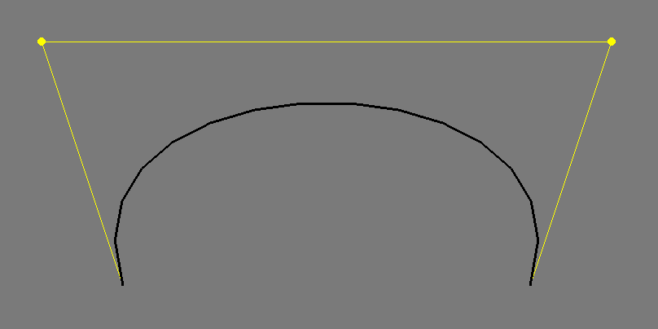
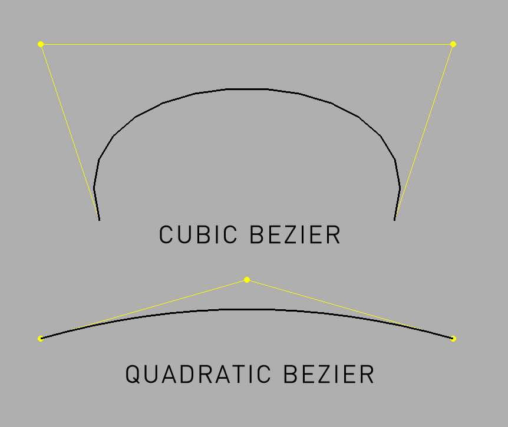

ofPolyline

ofPolyLine allows you to combine multiple points into a single vector data object that can be drawn to the screen, manipulated point by point, and combined with other ofPolyline instances. It is less complex than the ofPath and generally represents a single line or vector shape rather than multiple lines or shapes.
You can add points to an ofPolyline by adding vertices:
float i = 0;
while (i < TWO_PI) { // make a heart
float r = (2-2*sin(i) + sin(i)*sqrt(abs(cos(i))) / (sin(i)+1.4)) * -80;
float x = ofGetWidth()/2 + cos(i) * r;
float y = ofGetHeight()/2 + sin(i) * r;
line.addVertex(<a href="../math/ofVec2f.html" class="docs_class" >ofVec2f</a>(x,y));
i+=0.005*HALF_PI*0.5;
}
line.close(); // close the shape
or you can draw lines or curves:
float angle = 0;
while (angle < TWO_PI ) {
b.curveTo(100*cos(angle), 0, 100*sin(angle));
b.curveTo(300*cos(angle), 300, 300*sin(angle));
angle += TWO_PI / 30;
}
ofPolyline also includes methods to get the closest point, determine whether a point is inside shape, and resample shapes. Along with the ofPath class, it's the best way to draw and manipulate 2D and 3D vector graphics that you'll need to update and manipulate frequently.
If you use the lineTo or curveTo or bezierTo functions, you move the drawing point, so that drawing a line to 100,100 means a line from 0,0 to 100, 100. The next line would be a line from 100,100 to wherever you go next. Storing this position means that you can easily create continuous drawings without difficulty.
ofPolyline(...)
ofPolyline::ofPolyline(const vector< ofPoint > &verts)
Creates an ofPolyline from a vector of ofVec2f or ofPoint objects.
vector<ofPoint> pts;
float j = 0;
while(j < TWO_PI+0.1) {
pts.push_back( ofPoint(cos(j) * 100, sin(j) * 100));
j+=0.1;
}
ofPolyline cp(pts);
There is an easier way to draw circles though, using the arc() method.
Documentation from code comments
Creates an ofPolyline from a vector of ofVec2f or ofPoint objects.
addVertex(...)
void ofPolyline::addVertex(const ofPoint &p)
Adds a point using an ofPoint at the end of the ofPolyline.
addVertex(...)
void ofPolyline::addVertex(float x, float y, float z)
Adds a point using floats instead of an ofPoint at the end of the ofPolyline.
addVertices(...)
void ofPolyline::addVertices(const ofPoint *verts, int numverts)
Adds multiple points at the end of the ofPolyline using a pointer to an array of ofPoint objects.
ofPoint* verts = new ofPoint[5];
// make a pentagon
float size = 80.f;
float X1 = 0.125*sqrt(10 + 2*sqrt(5)) * size;
float X2 = 0.125*sqrt(10 - 2*sqrt(5)) * size;
float Y1 = 0.125*(sqrt(5) - 1) * size;
float Y2 = 0.125*(sqrt(5) + 1) * size;
verts[0] = ofPoint(0, -0.5 * size);
verts[1] = ofPoint(-X1, -Y1);
verts[2] = ofPoint(-X2, Y2);
verts[3] = ofPoint(X2, Y2);
verts[4] = ofPoint(X1, -Y1);
ofPolyline p;
p.addVertices(verts, 5);
Documentation from code comments
Adds multiple points at the end of the ofPolyline using a pointer to an array of ofPoint objects.
addVertices(...)
void ofPolyline::addVertices(const vector< ofPoint > &verts)
Adds multiple points at the end of the ofPolyline using a vector of ofPoint objects, which can be declared like so:
vector<ofPoint> verts;
// make a pentagon
float size = 80.f;
float X1 = 0.125*sqrt(10 + 2*sqrt(5)) * size;
float X2 = 0.125*sqrt(10 - 2*sqrt(5)) * size;
float Y1 = 0.125*(sqrt(5) - 1) * size;
float Y2 = 0.125*(sqrt(5) + 1) * size;
verts.push_back(ofPoint(0, -0.5 * size));
verts.push_back(ofPoint(-X1, -Y1));
verts.push_back(ofPoint(-X2, Y2));
verts.push_back(ofPoint(X2, Y2));
verts.push_back(ofPoint(X1, -Y1));
ofPolyline p;
p.addVertices(verts);
arc(...)
void ofPolyline::arc(const ofPoint ¢er, float radiusX, float radiusY, float angleBegin, float angleEnd, bool clockwise, int circleResolution=20)
Draws an arc around the ofPoint center with the width of radiusX and the height of radiusY.
The angleBegin and angleEnd indicate the start and end angles of the arc in degrees measured clockwise from the x-axis.
The clockwise boolean sets the drawing direction. Passing 'false' to it will draw the arc counter-clockwise.
Optionally, you can specify circleResolution, which is the number of line segments a circle would be drawn with.
arc(...)
void ofPolyline::arc(const ofPoint ¢er, float radiusX, float radiusY, float angleBegin, float angleEnd, int circleResolution=20)
Draws an arc around the ofPoint center with the width of radiusX and the height of radiusY.
The angleBegin and angleEnd indicate the start and end angles of the arc in degrees measured clockwise from the x-axis.
Optionally, you can specify circleResolution, which is the number of line segments a circle would be drawn with.
A partial arc will be drawn with the same resolution: if circleResolution == 20, a half-circle will be drawn with 10 segments.
If there are already vertices in the ofPolyline the arc will extend them; a line will be created from the endmost point on the ofPolyline to the beginning point of the arc.
Example:
ofPolyline polyline1, polyline2;
// draw an circle with a diameter of 100 in blue
ofPoint point1(150,120);
polyline1.arc(point1,100,100,0,360);
ofSetColor(ofColor::blue);
polyline1.draw();
// draw an line, then an semi-circle in red
polyline2.lineTo(300, 50);
ofPoint point2(450,120);
polyline2.arc(point2,100,100,0,180);
ofSetColor(ofColor::red);
polyline2.draw();

arc(...)
void ofPolyline::arc(float x, float y, float radiusX, float radiusY, float angleBegin, float angleEnd, int circleResolution=20)
Draws an arc around the coordinates (x,y) with the width of radiusX and the height of radiusY.
The angleBegin and angleEnd indicate the start and end angles of the arc in degrees measured clockwise from the x-axis.
Optionally, you can specify circleResolution, which is the number of line segments a circle would be drawn with.
arc(...)
void ofPolyline::arc(float x, float y, float z, float radiusX, float radiusY, float angleBegin, float angleEnd, int circleResolution=20)
Draws an arc around the coordinates (x,y,z) with the width of radiusX and the height of radiusY.
The angleBegin and angleEnd indicate the start and end angles of the arc in degrees measured clockwise from the x-axis.
Optionally, you can specify circleResolution, which is the number of line segments a circle would be drawn with.
arcNegative(...)
void ofPolyline::arcNegative(const ofPoint ¢er, float radiusX, float radiusY, float angleBegin, float angleEnd, int circleResolution=20)
arcNegative(...)
void ofPolyline::arcNegative(float x, float y, float radiusX, float radiusY, float angleBegin, float angleEnd, int circleResolution=20)
arcNegative(...)
void ofPolyline::arcNegative(float x, float y, float z, float radiusX, float radiusY, float angleBegin, float angleEnd, int circleResolution=20)
bezierTo(...)
void ofPolyline::bezierTo(const ofPoint &cp1, const ofPoint &cp2, const ofPoint &to, int curveResolution=20)
Creates a cubic bezier line from the current drawing point with the 2 control points indicated by ofPoint cp1 and cp2, that ends at ofPoint to. For instance, the following:
line.addVertex(ofPoint(200, 400));
line.bezierTo(100, 100, 800, 100, 700, 400);
Creates this:  The control points are shown in yellow.
bezierTo(...)
void ofPolyline::bezierTo(float cx1, float cy1, float cx2, float cy2, float x, float y, int curveResolution=20)
Creates a cubic bezier line from the current drawing point with the 2 control points indicated by the coordinates cx1, cy1 and cx2, cy2, that ends at the coordinates x, y.
bezierTo(...)
void ofPolyline::bezierTo(float cx1, float cy1, float cz1, float cx2, float cy2, float cz2, float x, float y, float z, int curveResolution=20)
Creates a cubic bezier line in 3D space from the current drawing point with the 2 control points indicated by the coordinates cx1, cy1, cz1 and cx2, cy2, cz2, that ends at the coordinates x, y, z.
float cx = ofGetWidth()/2;
float cy = 200;
float step = TWO_PI / 60;
for (float i = 0.0; i < TWO_PI; i+=step) {
if(i == 0.0) {
line.addVertex(cx + (400*cos(i)), cy+400, 400 * sin(i));
} else {
line.bezierTo( cx - (200*cos(i)), cy-100, 400 * sin(i),
cx + (200*cos(i)), cy+600, 400 * sin(i),
cx + (400*cos(i)), cy+400, 400 * sin(i));
}
}
Documentation from code comments
Adds a cubic bezier line in 3D space from the current drawing point with the 2 control points indicated by the coordinates cx1, cy1, cz1 and cx2, cy2, cz2, that ends at the coordinates x, y, z.
close()
void ofPolyline::close()
Closes the ofPolyline, meaning that all the vertices will be linked and can be "walked".
curveTo(...)
void ofPolyline::curveTo(const ofPoint &to, int curveResolution=20)
Draws a curve to an ofPoint object passed in:
float angle = 0;
while (angle < TWO_PI ) {
b.curveTo( ofPoint(100*cos(angle), 100*sin(angle)));
b.curveTo( ofPoint(300*cos(angle), 300*sin(angle)));
angle += TWO_PI / 30;
}
You need at least 4 points to be able to draw with curveTo, here's an explanation of why this happens:
If we have an empty ofPolyline p, and we do:
p.lineTo(v0);
p.lineTo(v1);
p.lineTo(v2);
p.lineTo(v3);
We end up with a line that starts at v0, heads to v1, then heads to v2 and finally ends at v3. But if we had instead done:
p.curveTo(v0);
p.curveTo(v1);
p.curveTo(v2);
p.curveTo(v3);
We end up with a curve that goes from v1 to v2. That might seem initially puzzling...
So, we have to dive under the hood. The curveTo(...) method makes Catmull-Rom splines wiki. The relevant bit to understand is that this type of spline is defined by four points:

P1 and P2 are the endpoints of our curve, while P0 and P3 are the control that define the shape of the curve.
When using curveTo(...) with ofPolyline, there's an internal vector that stores P0, P1, P2 and P3. When our ofPolyline is empty then the internal vector is also empty. When we call:
p.curveTo(v0); // Internal vector is [v0], so only P0 is defined
p.curveTo(v1); // Internal vector is [v0, v1], so only P0 and P1 are defined
p.curveTo(v2); // Internal vector is [v0, v1, v2], so only P0, P1 and P2 are defined
p.curveTo(v3); // Internal vector is [v0, v1, v2, v3], so all points are defined
Only once all of those points (P0 through P4) have been defined, then a spline has been fully defined and vertices can finally be added to our ofPolyline. When curveTo(v3) is called above, then the curve between P1 (v1) and P2 (v2) is sampled (at a resolution defined by the optional parameter curveResolution). That sampling slides along the curve and adds vertices to your ofPolyline.
The curve doesn't start at v0 and end at v3 because those points are acting as the control points (i.e. the points connected by dotted lines in the image above).
And now that we have P0 through P4 defined, when we call curveTo(...) next:
curveTo(v4); // Internal vector becomes [v1, v2, v3, v4]
The oldest point, v0, was bumped and everything shifted down. The sampling occurs again, but this time it is between v2 and v3.
Documentation from code comments
Adds a curve to an ofPoint object passed in
float angle = 0;
while (angle < TWO_PI ) {
b.curveTo( ofPoint(100*cos(angle), 100*sin(angle)));
b.curveTo( ofPoint(300*cos(angle), 300*sin(angle)));
angle += TWO_PI / 30;
}
\note You need at least 4 points to be able to use curveTo()
See also: Catmull-Rom splines wiki
curveTo(...)
void ofPolyline::curveTo(float x, float y, float z, int curveResolution=20)
Draws a curve to the x,y,z points passed in with the optional resolution.
float angle = 0;
while (angle < TWO_PI ) {
polyline.curveTo(100*cos(angle), 0, 100*sin(angle));
polyline.curveTo(300*cos(angle), 300, 300*sin(angle));
angle += TWO_PI / 30;
}
Documentation from code comments
Adds a curve to the x,y,z points passed in with the optional resolution.
getAngleAtIndex(...)
float ofPolyline::getAngleAtIndex(int index)
Documentation from code comments
Get angle (degrees) of the path at index
getAngleAtIndexInterpolated(...)
float ofPolyline::getAngleAtIndexInterpolated(float findex)
Documentation from code comments
Get angle (degrees) at interpolated index (interpolated between neighboring indices)
getBoundingBox()
ofRectangle ofPolyline::getBoundingBox()
Returns the bounding box of the shape, taking into account all the points to determine the extents of the polyline.
getClosestPoint(...)
ofPoint ofPolyline::getClosestPoint(const ofPoint &target, unsigned int *nearestIndex)
This returns the point on the line closest to the target. You can also optionally pass a pointer to/address of an unsigned int to get the index of the closest vertex.
getIndexAtLength(...)
float ofPolyline::getIndexAtLength(float f)
Documentation from code comments
Get (interpolated) index at given length along the path
Includes info on percentage along segment, e.g. ret=5.75 =>
75% along the path between 5th and 6th points
getIndexAtPercent(...)
float ofPolyline::getIndexAtPercent(float f)
Documentation from code comments
Get (interpolated) index at given percentage along the path
Includes info on percentage along segment, e.g. ret=5.75
=> 75% along the path between 5th and 6th points
getLengthAtIndex(...)
float ofPolyline::getLengthAtIndex(int index)
Documentation from code comments
Get length along path at index
getLengthAtIndexInterpolated(...)
float ofPolyline::getLengthAtIndexInterpolated(float findex)
Documentation from code comments
Get length along path at interpolated index (e.g. f=5.75 => 75% along
the path between 5th and 6th points)
getNormalAtIndex(...)
ofVec3f ofPolyline::getNormalAtIndex(int index)
Documentation from code comments
Get normal vector at index
getNormalAtIndexInterpolated(...)
ofVec3f ofPolyline::getNormalAtIndexInterpolated(float findex)
Documentation from code comments
Get normal vector at interpolated index (interpolated between neighboring indices)
getPerimeter()
float ofPolyline::getPerimeter()
Returns the size of the perimeter of the polyline, good for determining length of the line, rather than just the bounding box shape.
getPointAtIndexInterpolated(...)
ofPoint ofPolyline::getPointAtIndexInterpolated(float findex)
Documentation from code comments
Get point along the path at interpolated index (e.g. f=5.75 =>
75% along the path between 5th and 6th points)
getPointAtLength(...)
ofPoint ofPolyline::getPointAtLength(float f)
Documentation from code comments
Get point long the path at a given length (e.g. f=150 => 150
units along the path)
getPointAtPercent(...)
ofPoint ofPolyline::getPointAtPercent(float f)
Documentation from code comments
Get point along the path at a given percentage (e.g. f=0.25
=> 25% along the path)
getResampledByCount(...)
ofPolyline ofPolyline::getResampledByCount(int count)
This resamples the line based on the spacing passed in. The lower the count passed in, the more points will be eliminated. This doesn't add new points to the line though.
getResampledBySpacing(...)
ofPolyline ofPolyline::getResampledBySpacing(float spacing)
This resamples the line based on the spacing passed in. The larger the spacing, the more points will be eliminated.
line.draw();
ofTranslate(400, 0);
line.getResampledBySpacing(100).draw();
getRotationAtIndex(...)
ofVec3f ofPolyline::getRotationAtIndex(int index)
Documentation from code comments
Get rotation vector at index (magnitude is sin of angle)
getRotationAtIndexInterpolated(...)
ofVec3f ofPolyline::getRotationAtIndexInterpolated(float findex)
Documentation from code comments
Get rotation vector at interpolated index (interpolated between neighboring indices) (magnitude is sin of angle)
getSmoothed(...)
ofPolyline ofPolyline::getSmoothed(int smoothingSize, float smoothingShape)
This returns a smoothed version of the ofPolyline. smoothingSize is the size of the smoothing window. So if smoothingSize is 2, then 2 points from the left, 1 in the center, and 2 on the right (5 total) will be used for smoothing each point. smoothingShape describes whether to use a triangular window (0) or box window (1) or something in between (for example, .5).
getTangentAtIndex(...)
ofVec3f ofPolyline::getTangentAtIndex(int index)
Documentation from code comments
Get tangent vector at index
getTangentAtIndexInterpolated(...)
ofVec3f ofPolyline::getTangentAtIndexInterpolated(float findex)
Documentation from code comments
Get tangent vector at interpolated index (interpolated between neighboring indices)
getVertices()
vector< ofPoint > & ofPolyline::getVertices()
Documentation from code comments
Gets a vector of vertices that the line contains
getVertices()
const vector< ofPoint > & ofPolyline::getVertices()
Returns the vector of vertices that the line contains, vector
getWrappedIndex(...)
int ofPolyline::getWrappedIndex(int index)
Documentation from code comments
Get wrapped index depending on whether poly is closed or not
hasChanged()
bool ofPolyline::hasChanged()
Returns whether the vertices within the line have changed.
inside(...)
bool ofPolyline::inside(const ofPoint &p)
Tests whether the ofPoint is within a closed ofPolyline.
inside(...)
bool ofPolyline::inside(const ofPoint &p, const ofPolyline &polyline)
Test whether the ofPoint is within anothe polyline, passed in as ofPolyline&
Documentation from code comments
Tests whether the ofPoint is within a closed ofPolyline.
inside(...)
bool ofPolyline::inside(float x, float y)
Tests whether the x,y coordinates are within a closed ofPolyline.
inside(...)
bool ofPolyline::inside(float x, float y, const ofPolyline &polyline)
Test whether the x,y point is within anothe polyline, passed in as ofPolyline&
Documentation from code comments
Tests whether the x,y coordinates are within a closed ofPolyline.
isClosed()
bool ofPolyline::isClosed()
Whether the shape is closed or not. Certain operations, like getSmoothed() can only be performed on closed shapes.
lineTo(...)
void ofPolyline::lineTo(const ofPoint &to)
Add a line from the last point added, or from 0,0 if no point is set, to the point indicated by the ofPoint passesd in.
lineTo(...)
void ofPolyline::lineTo(float x, float y, float z)
Add a line from the last point added, or from 0,0 if no point is set, to the point indicated by the floats x,y,z passesd in.
operator[](...)
const ofPoint & ofPolyline::operator
Documentation from code comments
Allows you to access the points of the ofPolyline just like you would in an array, so to make the points of a line follow the mouse movement, you could do:
line[0].set(mouseX, mouseY);
int i = 1;
while ( i<bounds.size()) {
float angle = atan2(line[i-1].y - line[i].y, line[i-1].x - line[i].x);
bounds[i].set(bounds[i-1].x - cos(angle) * 20, bounds[i-1].y - sin(angle) * 20);
i++;
}
operator[](...)
ofPoint & ofPolyline::operator
The [] operator allows you to access the points of the ofPolyline just like you would in an array, so to make the points of a line follow the mouse movement, you could do:
line[0].set(mouseX, mouseY);
int i = 1;
while ( i<bounds.size()) {
float angle = atan2(line[i-1].y - line[i].y, line[i-1].x - line[i].x);
bounds[i].set(bounds[i-1].x - cos(angle) * 20, bounds[i-1].y - sin(angle) * 20);
i++;
}
quadBezierTo(...)
void ofPolyline::quadBezierTo(const ofPoint &p1, const ofPoint &p2, const ofPoint &p3, int curveResolution=20)
Creates a quadratic bezier line in 2D space from the current drawing point with the beginning indicated by the point p1, the control point at p2, and that ends at the point p3.
quadBezierTo(...)
void ofPolyline::quadBezierTo(float cx1, float cy1, float cx2, float cy2, float x, float y, int curveResolution=20)
Creates a quadratic bezier line in 3D space from the current drawing point with the beginning indicated by the coordinates cx1, cy1, the control point at cx2, cy2, and that ends at the coordinates x, y.
quadBezierTo(...)
void ofPolyline::quadBezierTo(float cx1, float cy1, float cz1, float cx2, float cy2, float cz2, float x, float y, float z, int curveResolution=20)
Creates a quadratic bezier line in 3D space from the current drawing point with the beginning indicated by the coordinates cx1, cy1, cz1, the control point at cx2, cy2, cz2, and that ends at the coordinates x, y, z. 
resize(...)
void ofPolyline::resize(size_t size)
Resize the number of points in the ofPolyline to the value passed in.
setClosed(...)
void ofPolyline::setClosed(bool tf)
Closes the ofPolyline, meaning that all the vertices will be linked and can be "walked".
simplify(...)
void ofPolyline::simplify(float tolerance=0.3f)
Simplifies the polyline, removing un-necessary vertices. The tolerance determines how dis-similar points need to be to stay in the line. Higher tolerance means more points removed, lower tolerance means less points removed.
comments powered by Disqus
comments
You can add comments with usage examples or other information for each class, method or variable, for adding documentation to an empty section or reporting errors is better to send a fix or open an issue through github.
When posting code enclose it in: